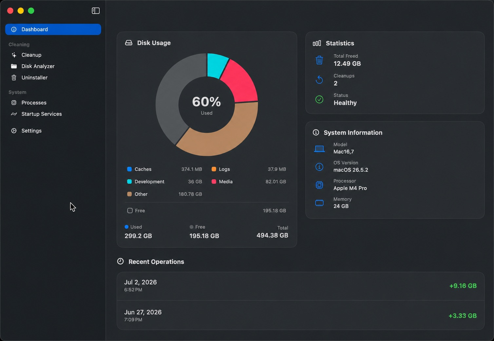

On-Device Apple Intelligence
- Native Foundation Models — offline analysis of processes, agents, files, and leftovers
- Smart Explanations — tap the sparkles icon in Uninstaller, Startup, Processes, Cleanup, or Disk Analyzer
Free disk space.
Keep control.
Free Mac cleaner for Apple Silicon: clean Mac storage, remove caches, uninstall apps with leftover scan, and run disk cleanup — review first, then clean. Offline, no telemetry.

01 · Features
Everything runs locally. No telemetry, no analytics, nothing leaves your Mac.
On-device FoundationModels explanations for files, caches, processes, and startup agents. Fully offline on supported Apple Silicon. Output in English, Русский, Українська, or Español.
Adaptive glass UI on macOS 27+ via GlassEffectContainer, .glassEffect(), and native blur that respects Reduce Transparency.
54 categories, 450+ built-in paths — app caches, browsers, package managers, Xcode, Docker, orphaned leftovers, large installers. Parallel scan across all cores. Risk badges after scan; you choose what to remove.
Scan any folder, browse by size, filter by Video / Audio / Photos / Apps / Documents / Archives. Reveal in Finder or move to Trash. Keeps scanning in the background.
Drag & drop any .app. Scans up to 5 levels with 30 evidence types (Bundle ID, Team ID, Spotlight, plist, Launch Services). Safe or Balanced mode. Confidence tiers: guaranteed → ignore.
Flat or Grouped views. Sort by CPU, Memory, Name, or Threads. Whitelist critical apps; blacklist noisy ones for quick termination. System processes stay protected.
LaunchAgents and LaunchDaemons from ~/Library and /Library. Grouped into User, Third-party, and System. Load, unload, or stop — with admin prompt when needed.
Uninstaller and Disk Analyzer move items to Trash via trashItem(at:). Smart Cleanup removes selected caches only after you confirm. SafetyManager blocks /System, /usr, ~/.ssh, and other critical paths. Permanent delete is opt-in.
English, Русский, Українська, Español — UI, errors, and byte/date formatting. Smart Updates check GitHub Releases on startup with no background daemons.
02 · Screenshots
Dashboard, cleanup, uninstaller, processes, and more


03 · What gets cleaned
Every category is scanned; risk badges appear after scan — you pick what to delete
Google, Spotify, JetBrains, Safari, Chrome, Firefox, Edge, Brave, Vivaldi, Arc, Telegram, Discord, Slack, Signal, Teams
Homebrew, npm, yarn, pnpm, CocoaPods — native cleanup commands where available
Xcode DerivedData, iOS Simulators, Android SDK, Gradle/Maven, Flutter/Dart, Go, Rust, Python, Node, Swift PM, Bazel
Cursor, VS Code, Windsurf, Zed, JetBrains, Claude, ChatGPT, Gemini, opencode, Figma, Notion, Postman
QuickLook, fonts, Spotlight, CloudKit, Time Machine local snapshots, Docker prune, crash reports, Mail downloads
Leftovers in HTTPStorages, WebKit, Cookies; DMG/pkg/iso installers; node_modules; iPhone backups; IPSW
Opt-in toggles: Maven ~/.m2, Go GOMODCACHE, Flutter .dart_tool, .DS_Store, iCloud Documents, Voice Memos, GarageBand/Logic, iMovie/Final Cut, Sleep Image.
04 · Changelog
On-device AI, Liquid Glass, Disk Analyzer, forensic Uninstaller
GlassEffectContainer, .glassEffect(), .glassButtonStyle()matchedGeometryEffect and hover highlightstrashItem(at:).app for an instant deep scan05 · About
A free macOS cleaner built for Apple Silicon — caches, leftovers, and developer data
MacOSCleaner is a free, source-available mac cleaner and macOS cleaner for Apple Silicon. It helps you clean Mac storage, free disk space, and remove junk that builds up after normal use — app caches, temporary files, browser data, package-manager leftovers, and more. Unlike many commercial cleaners, scanning stays on your Mac: no account, no cloud upload, no telemetry.
When people search for a free mac cleaner, they usually want one thing: reclaim space without risking the system. MacOSCleaner focuses on that job. Smart Cleanup covers dozens of categories in one pass — a practical cache cleaner and disk cleanup tool in a native SwiftUI app. You review risk badges after the scan, pick what to remove, and confirm before anything leaves the disk. Permanent delete is opt-in; many flows move items to Trash first so you can restore if needed.
Common targets for a Mac disk cleanup include user and app caches, logs, large download leftovers, and data left behind by messengers, IDEs, and browsers. The app also surfaces folders that grow quietly over months — the kind of storage creep that makes “clean Mac storage” feel urgent after an Xcode or Docker week.
Dragging an app to Trash often leaves preferences, support files, caches, and launch agents behind. MacOSCleaner’s app uninstaller for Mac is built to remove app leftovers with a forensic-style scan: Bundle ID, Team ID, Spotlight hits, plists, and Launch Services — across multiple levels. You get confidence tiers so “guaranteed” hits are obvious and questionable paths stay optional. That makes uninstall cleaner than a simple delete, and safer than a blind script.
Developers need a different kind of macOS cleaner. DerivedData, simulators, device support files, and old archives can eat tens of gigabytes. MacOSCleaner includes paths for Xcode cleanup, Docker cleanup (images, containers, and related data where safe to target), and package managers such as Homebrew, npm, yarn, and pnpm — so developer cleanup is part of the same workflow, not a separate suite of terminal recipes you have to remember.
You still choose what to run. Dangerous or protected paths stay marked; system areas remain blocked. The goal is not “delete everything that looks large,” but informed cleanup that fits how you work.
A good routine is simple: scan regularly, clean caches after big projects, and run the uninstaller when you retire an app. Pair that with the built-in Disk Space Analyzer when you need to see which folders dominate — video, photos, archives, or apps — then reveal in Finder or trash selectively. Local Apple Intelligence explanations (on supported Apple Silicon) can clarify what a cache folder is before you remove it, entirely offline.
MacOSCleaner also helps with launch agents and noisy processes: inspect startup services, load or unload user agents when appropriate, and keep system processes protected. That supports long-term performance, not only a one-time storage spike.
Everything runs locally. There is no analytics pipeline and no anonymous “usage report.” Safety checks block critical paths such as system directories and sensitive user locations. The project is source-available for personal use — you can read how cleanup and uninstall logic works instead of trusting a closed binary with opaque “deep clean” modes.
Commercial Mac cleaners often bundle subscriptions, upsells, or always-on background helpers. MacOSCleaner keeps the opposite posture: open the app when you need a scan, review results, clean what you selected, and quit. No background daemon required for everyday use. Smart Updates only check GitHub Releases when you launch — still optional in spirit, and never a reason to phone home with usage data.
If you need a mac cleaner for Apple Silicon, an app uninstaller that respects leftovers, or a focused way to clean Mac storage without subscriptions, MacOSCleaner is built for that. Download the latest release, scan, review, then clean — with control over every selection.
Typical wins after a first full Smart Cleanup: browser and messenger caches, IDE support folders, package-manager download caches, and stale installers. Pair that with an uninstall pass for apps you no longer use, and disk space often returns without deleting documents or photos. When storage is still tight, the Disk Space Analyzer shows which folders dominate so you can decide whether the next step is archive cleanup, media offload, or deeper developer cleanup — including Xcode, Docker, and Homebrew cache paths when those tools are installed. The same native UI covers these flows in English, Русский, Українська, and Español.
.app, review leftovers, and remove what you accept.
You do not have to run a full system scan first.
06 · How it works
Swift 6 · SwiftUI · XcodeGen · OSLog — parallel on Apple Silicon
Stack-based iterator batches work and deduplicates inodes. Size cache avoids redundant work. Categories run concurrently across cores.
Risk badges (Safe / Moderate / Dangerous / Protected). DEV badge on developer paths. Optional local AI explanations before you decide.
Uninstaller and Disk Analyzer → Trash. Smart Cleanup removes selected items after confirmation. Critical paths stay blocked.
Post-uninstall re-scan and snapshots for rollback. Logs in Console.app — filter subsystem input.MacOSCleaner.